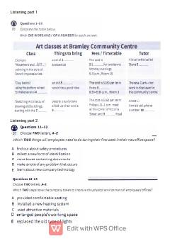

MTIELTS imtihoni uchun mo'ljallangan tinglab tushunish amaliy testlari to'plami.
Ushbu kitob ingliz tilini o'rganuvchilar va IELTS imtihoniga tayyorlanuvchilar uchun mo'ljallangan tinglab tushunish (listening) bo'yicha amaliy testlar to'plamidir. Material turli mavzulardagi savollar, topshiriqlar va mashqlarni o'z ichiga oladi. O'quvchilar o'z bilimlarini sinovdan o'tkazishlari va imtihon formatiga ko'nikishlari mumkin.